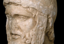

Ares
Ares, or Mars in Latin, is a male counterpart to Athena as a god of war. He is not frequently personified in mythology, although he does appear as a personified character in Homer. When Ares is wounded by the mortal Greek hero Diomedes, Zeus rebukes Ares for being a destructive god, and hateful to Zeus to the extent that, were he not Zeus’ son, he would long ago have banished him from the company of the gods (Homer Iliad 5. 889 ff.). He also appears as the adulterous lover of Aphrodite in the myth we examined concerning Aphrodite (recounted in book 8 of Homer’s Odyssey). It is important to distinguish Ares from Athena, for while both are connected to war, their approaches to this activity are very different. Ares is a destructive god, who incites strife and urges on furious battle. Athena, on the other hand, is a goddess who takes a more thoughtful approach to battle and often serves as a protective goddess. She does not barge ahead to incite strife at every turn, and we saw above how in the Iliad she stays the hand of Achilles from killing Agamemnon in anger. She is in other words a goddess who blends force and wisdom. It is perhaps this latter quality that connects her so closely to Zeus, whereas Ares is hated by his father. (see image 1)
{kind=link}